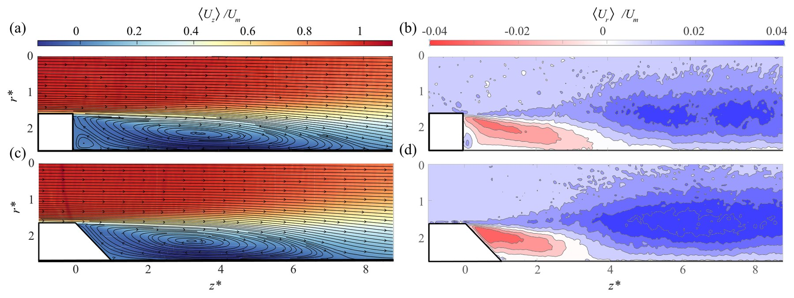
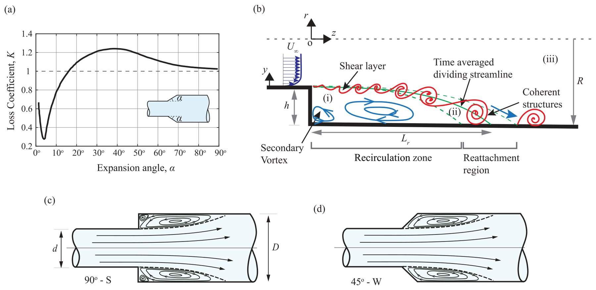
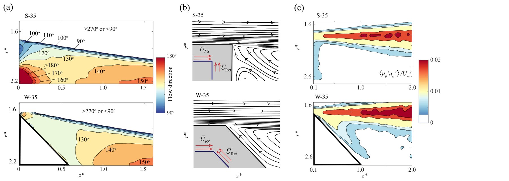

Turbulence across pipe expansions
Stereo-PIV measurements compare the turbulence response to abrupt and gradual axisymmetric pipe expansions.
PublishedPhysical Review Fluids

Overview
Flow separation and reattachment following changes in cross section govern momentum transport and turbulence production. This work contrasts step and wedge axisymmetric expansions.
Experimental approach
Refractive-index-matched stereo-PIV and turbulence-statistics analysis in a recirculating flow facility.
Key result
The gradual expansion produced broader turbulence production and higher losses than the abrupt step under the conditions studied.
Figures and videos

